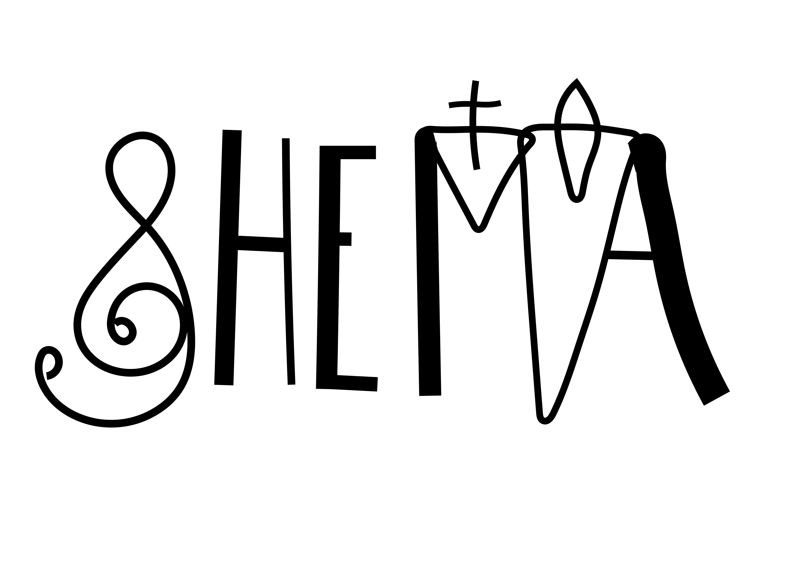

Shemá
Escucha la Palabra · Tu propia canción
Volver al cancionero
Cancionero
Spotify
Calendario
Cal.
Trasponedor libre
Pega tu canción y cambia la tonalidad.
Pega tu canción abajo y la verás aquí con los acordes destacados.
Texto fuente (edítalo aquí)